On ne peut évoquer les liens entre les Musulmans et en particulier les Palestiniens, sans évoquer la personnalité du Grand Mufti de Jérusalem et ses liens avec le régime nazi, non pas seulement pour l’antériorité de ces rapports sur ceux que nous souhaitons éclairer dans ce dossier, mais parce que le Mufti Husseini avait des liens de parenté directe avec de nombreux leaders importants du monde palestinien, en commençant par Yasser Arafat, dont il était l’oncle, et Fayçal Husseini, dont il était l’aïeul. Cette parenté n’est pas sans effet, puisqu’elle est revendiquée par Arafat, comme elle est revendiquée par la famille Husseini, et que les rapports de fidélité et de liens familiaux gèrent encore la société et la politique palestiniennes, où la logique des clans familiaux prévaut encore. Enfin, la figure emblématique du Mufti est aujourd’hui revendiquée par l’idéologie palestinienne comme celle d’un héros dont le modèle perdure en dépit ou en raison de son engagement pronazi. Il faut donc rappeler l’idéologie et les actions entreprises par le Mufti pour appréhender ce qu’un tel modèle implique comme programme.
Pendant la seconde guerre mondiale, Hitler eut plusieurs projets de « réserve de Juifs », selon lesquels les Juifs pourraient survivre à la solution finale, mais devraient quitter l’Allemagne pour rejoindre un territoire où ils seraient « parqués », surveillés comme des animaux dans une réserve naturelle, avec l’interdiction de quitter ce pays. On sait, par exemple, par la correspondance privée de Goebbels (actuellement consultable au musée de Yad Vashem), que Goebbels tenta de convaincre Hitler de renoncer à la solution finale et d’appliquer le plan «de l’Afrique du Nord», qui prévoyait la mise en place de ce projet en Afrique du Nord, vraisemblablement au Maroc. La seconde solution concernait Israël, en profitant de l’existence d’un yishouv juif. Les exigences nazies comportaient aussi le paiement d’une rançon par individu juif, qui rendit le départ massif de Juifs vers Israël virtuellement impossible. Cependant, ce furent les Arabes et non les Sionistes qui amenèrent les Nazis à revoir leur position «pro-sioniste». Entre 1933 et 1936, 164.267 immigrants juifs arrivèrent en Palestine, dont 61.854 au cours de la seule année 1935. La minorité juive se développa jusqu’à passer d’une proportion de 18 % de la population en 1931, à 29,9 % en décembre 1935, de sorte que les Sionistes purent envisager qu’ils constitueraient la majorité de la population dans un futur assez proche. Les Arabes réagirent très vite face à ces statistiques. Ils n’avaient jamais accepté le mandat britannique sur la Palestine et son but déclaré d’y créer un foyer juif. Dès 1920 et 1921, des émeutes éclatèrent. En 1929, après une série d’échauffourées entre Juifs et Arabes, au Mur Occidental, les musulmans massacrèrent plus de 135 Juifs, les Britanniques faisant à peu près autant de victimes chez les Arabes. La politique des Arabes de Palestine suivait une logique de clan. Le clan le plus nationaliste était celui des Husseini, sous l’égide du Mufti de Jérusalem, al-Hajj Amin al-Husseini. Très pieux, il se méfiait aussi de toute réforme sociale qui pourrait mobiliser la masse paysanne illettrée des paysans arabes palestiniens. Il se mit donc en quête d’un soutien extérieur pour contenir des soulèvements internes. Son choix se porta sur l’Italie. Cependant, le projet allemand de créer une réserve de Juifs, ainsi que la présence de troupes allemandes en Égypte, favorisèrent la prise de contact des nazis avec le grand Mufti de Jérusalem pendant la guerre.
Le Mufti avait, quant à lui, ses propres visées sur les possibilités offertes par sa collaboration avec le régime nazi. La photo ci-contre le montre, lors de l’une de ses rencontres avec Hitler.
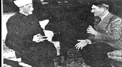
Le 21 Juillet 1937, il décida de resserrer ses liens avec l’Allemagne en rendant une visite officielle au Consul général allemand Döhle, en Palestine.
Il présenta son soutien en faveur de la politique menée par l’Allemagne, en déclarant «qu’il voulait savoir jusqu’à quel point le Troisième Reich était prêt à soutenir le mouvement arabe contre les Juifs». Bien que les Allemands aient officiellement refusé de changer leur politique, ils décidèrent de porter plus d’attention à la Palestine. La révolte arabe de 1936-1939 avait déjà bénéficié de l’appui direct, financier et militaire, de l’Allemagne et de l’Italie. Les Archives du Haut Commandement de l’armée allemande saisies à Flensburg après la deuxième Guerre Mondiale avaient livré un rapport selon lequel « seuls les fonds mis à la disposition du Grand Mufti de Jérusalem par l’Allemagne lui avaient permis d’organiser la révolte de Palestine ». En septembre 1937, deux jeunes officiers SS, Karl Adolf Eichmann et Herbert Hagen, furent envoyés en Palestine, «afin de se familiariser avec le pays et son mode de vie, et d’établir des contacts avec les gens», dont le Mufti. Il y eut donc rencontre entre ces représentants du régime nazi et les représentants du Mufti. Leurs tractations constituaient, en fait, les préliminaires de la liquidation, "à l’allemande", du Foyer National Juif en Palestine. La presse arabe de l’époque s’associait au « Martyre du peuple allemand sous le joug de la juiverie internationale ». Des portraits d’Hitler et de Mussolini, ainsi que des drapeaux nazis étaient fréquemment arborés par les populations arabes.
Bien que le Mufti ait échappé à plusieurs arrestations des autorités britanniques, il refusa de se réfugier parmi les Libanais musulmans, il se trouva bientôt investi par le Reich de la fonction d’agent de l’Allemagne nazie en Palestine. Ce rôle devait parfaitement lui convenir, car, selon Brenner, un spécialiste de l’histoire de cette période, le Mufti figurait parmi les bénéficiaires des salaires versés par Abwehr II, la division allemande de sabotage et du contre-espionnage. Yisraeli, quant à lui, estime que le Mufti commença à percevoir de l’argent allemand dès 1936 2. En 1938, Abwehr II avait pour plan de livrer des cargaisons entières d’armes au Mufti, par le biais de l’Arabie saoudite et de l’Irak. Les transferts furent annulés en raison des vives protestations des Britanniques. Comme les forces de l’Axe ne pouvaient s’immiscer plus avant dans la politique en Palestine, ce fut l’Irak qui devint victime de ces alliances à travers l’organisation massive du Mufti. Les Irakiens en firent un héros national, et il établit son quartier général à Bagdad. Le gouvernement irakien finança ses activités, ainsi que ses nombreuses «oeuvres de charité», établissant des taxes particulières qui touchaient les officiels irakiens, ainsi que des donations aux Arabes palestiniens. S’ajoutaient à tout cela de très importantes contributions émanant de l’Allemagne, de l’Italie, de l’Arabie saoudite, et de l’Égypte. Tout cela permit au Mufti de vivre très confortablement tout en menant sa propagande contre les Juifs et les Anglais. Sa propagande consistait à organiser un groupe d’officiels irakiens en faveur de l’Axe. Au début de 1941, le Mufti et le «Cercle d’Or» d’officiers de l’armée irakienne pro- allemands, menés par Rashid Ali, forcèrent le premier ministre irakien, Nuri Said Pasha, pro-britannique, à démissionner. En mai, il proclama le djihad contre la Grande-Bretagne. Cela signifiait que les Musulmans, ou du moins ceux qui décidaient de suivre son édit, étaient tenus de combattre l’Angleterre, «ce grand ennemi de l’Islam». Le coup en faveur de l’Axe fut d’une efficacité limitée dans le temps. En quelques mois, les troupes britanniques écrasèrent la rébellion, et le Mufti dut disparaître à nouveau et se réfugier, cette fois, en Allemagne, en passant par l’Iran, la Turquie, et le bureau de Mussolini à Rome.
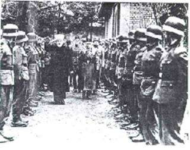
Le Mufti avait accusé les Juifs irakiens d’avoir été à l’origine de l’échec du coup d’État en Irak. Il traita les Juifs de «cinquième colonne de l’Irak», eux dont les ancêtres étaient installés dans ce pays depuis l’exil de Babylone. Des soldats irakiens et des civils convaincus par le Mufti attaquèrent les Juifs qui s’étaient rassemblés en public pour accueillir le nouveau gouvernement. Les conséquences furent terribles: 600 Juifs furent tués, des milliers blessés dans le Fahrud, et 586 magasins et hangars vandalisés et pillés. Une commission d’enquête, nommée par le gouvernement irakien, découvrit que Haj Amin avait été l’une des personnalités instigatrices du pogrom. Comme sa politique avait progressivement consisté à accuser les Juifs des maux dont souffrait le pays, il n’est pas surprenant qu’il se soit allié au gouvernement nazi à Berlin. Le 20 Novembre 1941, le ministre allemand des Affaires étrangères, Joachim von Ribbentrop, le reçut à Berlin. Leur conversation fut un préalable à la conversation du Mufti avec Hitler. Les thèmes abordés furent rapportés fidèlement dans le carnet de notes de Ribbentrop et dans le journal personnel du Mufti:
Le Mufti… Les Arabes sont les amis naturels des Allemands… C’est pourquoi ils sont prêts à collaborer avec l’Allemagne de tout leur coeur et à participer à une guerre, non seulement de façon négative, en commettant des actes de sabotage et en instiguant des révolutions, mais aussi positivement, en formant une légion arabe. Dans cette lutte, les Arabes se battent pour l’indépendance de la Palestine, de la Syrie, de l’Irak… Le Führer avait, quant à lui, l’intention de demander aux nations d’Europe de régler, l’une après l’autre, leur propre « problème juif » et d’adresser, le temps venu, le même message aux nations non européennes…
L’échange était clair: une fois les armées entrées dans le Caucase, Hitler se débarrasserait de tous les Juifs est-européens, et le Mufti devait, quant à lui, obtenir le soutien des Musulmans des Balkans et des républiques soviétiques, où ils constituaient des groupes importants. Puis Hitler «libérerait» les peuples arabes qui souhaitaient leur indépendance et les aiderait à exterminer les Juifs du Moyen- Orient.
En fait, des documents découverts récemment par la BBC montrent qu’un parachutage de commandos eut même lieu, qui devait aboutir à l’établissement d’une base espionnant et travaillant au recrutement de combattants palestiniens, avec l’or nazi. Le groupe était sous le commandement du Colonel Kurt Wieland, un arabisant qui connaissait bien la Palestine. Le projet échoua après que le parachutage, en octobre 44, ait eu lieu bien trop au Sud de Jéricho (le pilote, perdu, parachuta les hommes d’une hauteur excessive) et que deux des hommes de Wieland aient été capturés. Wieland resta caché dans un village arabe avec deux de ses compagnons, puis dans une grotte, et, enfin dans un monastère. Ils ne trouvèrent aucun soutien pour organiser un soulèvement arabe, et une semaine plus tard, ils étaient faits prisonniers. Les deux derniers hommes de la mission n’ont jamais été retrouvés.
Le Mufti, sponsorisé par l’Allemagne nazie, étendit ses velléités au Moyen-Orient mais aussi vers les autres zones géographiques habitées par des Juifs. Ses activités consistaient en 1) de la propagande radio, 2) de l’espionnage, 3) l’organisation des Musulmans en unités militaires dans les pays occupés par les forces de l’Axe, 4) la mise en place de légions arabes contrôlées par les Allemands ainsi que la Brigade arabe. Sa plus grande réussite fut le recrutement de dizaines de milliers de Musulmans en Bosnie-Herzégovine et en Albanie pour les Waffen SS. Ses légions arabes participèrent plus tard au massacre de dizaines de milliers de Serbes, de Juifs et de bohémiens. En 1943, il y avait 20.000 musulmans sous les drapeaux allemands et sa « division » de Waffen SS, les Handshar 3. Mais l’aventure des Balkans ne constituait qu’une part de l’activité du Mufti, dont les préoccupations étaient centrées sur les Juifs de toute la planète. Dans la protestation annuelle contre la déclaration Balfour, qu’il mit en scène dans le grand hall de la Luftwaffe, à Berlin, en 1943, il s’attaqua à «la conspiration anglo-saxonne et juive», et déclara que le traité de Versailles était un désastre à la fois pour les Allemands et les Arabes. Mais les Allemands, dit-il, savaient se débarrasser des Juifs. Le 1er mars 1944, il ajouta dans un bulletin radiophonique: «Arabes, soulevez-vous et battez-vous pour vos droits sacrés. Tuez les Juifs là où vous les trouverez. Cela est agréable à Dieu, à l’Histoire, et à la religion. Cela sauve votre honneur.» Le Mufti participait déjà à la solution finale. Il rendit même visite à Auschwitz, où il admonesta les gardes près des chambres à gaz, en leur enjoignant de travailler plus diligemment.
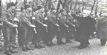
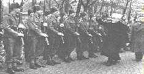
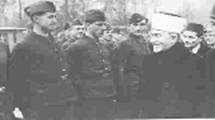
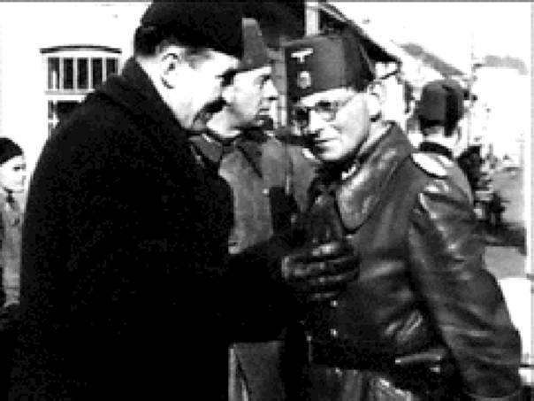
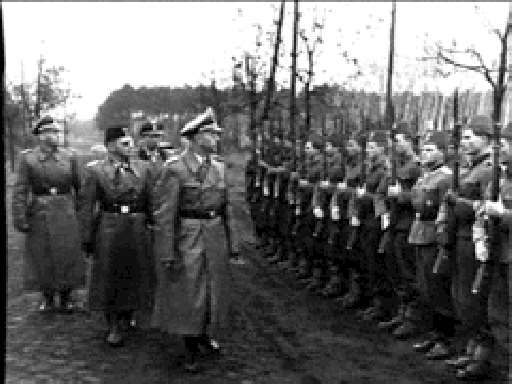
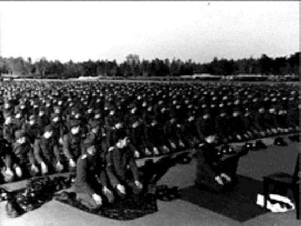
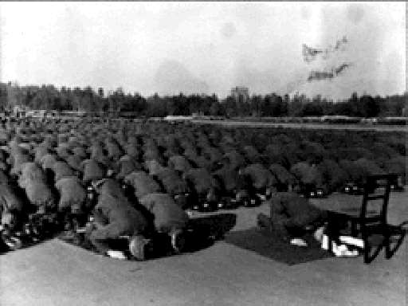
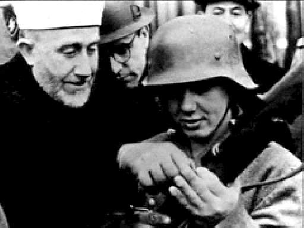
Visite du Mufti aux Waffen SS musulmans. Conseils donnés à une jeune recrue…
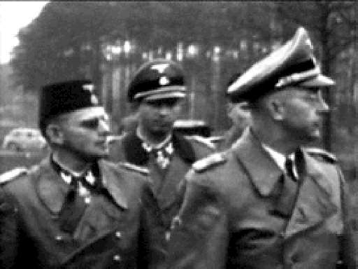
Revue de troupes par des officiers nazis allemands et bosniaques musulmans
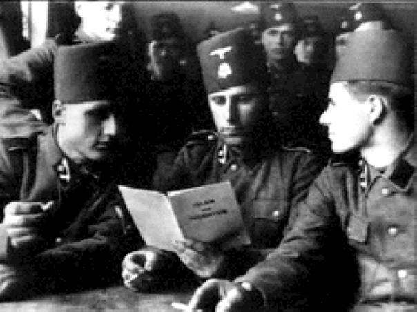
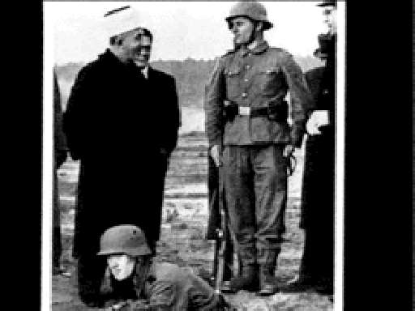
Volontaires musulmans bosniaques dans l’armée allemande nazie, pendant la pause…
Sami al-Joundi, l’un des fondateurs du parti Baath régnant sur la Syrie, rappelle:
Nous étions racistes. Nous admirions les nazis. Nous étions immergés dans la littérature nazie et ses livres… Nous fûmes les premiers à penser à faire une traduction de Mein Kampf. Toute personne vivant à Damas, à cette époque, fut témoin de cette inclination arabe pour le nazisme.
Ces enseignements ne cessèrent jamais tout à fait. Actuellement, Mein Kampf tient la sixième place au palmarès des bestsellers arabes palestiniens. Luis Al-Haj, traducteur de l’édition arabe, écrit avec fierté, dans la préface, comment l’« idéologie » d’Hitler et ses « théories du nationalisme, de la dictature, et de la race sont en progression constante actuellement dans ‘nos’ ([leurs]) Etats arabes. » Dans leur article, daté du 3 octobre [année non précisée], « L’antisémitisme arabe », publié sur un site allemand d’Internet, Thomas von der Osten-Sacken et Thomas Uwer mettaient en évidence les liens ayant existé avec les nazis entre le président égyptien, Anwar al-Saddat, et un groupe d’officiers égyptiens, auquel il avait appartenu. Ce groupe était issu des fameuses « chemises vertes », groupe nazi organisé pendant la guerre en Égypte par les nazis. Gamad Abd al-Nasser, quant à lui, déclarait dans le Deutsche National Zeitung du 1er mai 1964: « pendant la Seconde Guerre mondiale, nos sympathies allaient aux Allemands » (während des Zweiten Weltkrieges unsere Sympathien den Deutschen gehörten). Dans la plupart des pays arabes, les anciens nazis trouvèrent un emploi à leur mesure, après la guerre, un bon nombre d’entre eux en tant que conseillers « aux questions juives », d’autres comme responsables de questions touchant aux relations avec Israël.
Tableau des nazis devenus conseillers des pays arabes
Altern Erich,
Chef régional SD, Affaires
Années 50, en Égypte, puis juives en Galicie instructeur de camps alias Ali Bella palestiniens
Appler Hans,
Information avec Goebbels Égypte, ministère de l’information (1956) alias Salah Chaffar Bartel Franz,
Adjoint au chef de la Gestapo
Depuis 1959, Section juive du ministère de l’Information au à Kattowitz (Pologne) alias el-Hussein
Caire
Baurnann, SS Standartenührer
Participe à la liquidation du
Ministère de la Guerre au Caire: instructeur du Front de
Ghetto de Varsovie
Libération de la Palestine
Bayerlein,
Aide-de-camp de Rommel Égypte col. Fritz Becher Hans
Section juive Gestapo, Vienne Alexandrie (Égypte): y instruit la police
Beissner, Dr Wilhelm
Chef Section VI C 13 RSHA Égypte
Bender Bernhardt,
Gestapo, Varsovie Conseiller de la police politique au Caire alias Béchir Ben Salah Birgel Werner,
Officier SS Vient de RDA au Caire, au ministère de l’Information
alias El-Gamin
Boeckler Wilhelm, SS
Recherché en Pologne pour son rôle dans la liquidation du
En Égypte depuis 1949, travaille au département
Untersturmführer
Ghetto de Varsovie
Israël du Bureau d’informations
Boerner Wilhelm,
Gardien du camp de
Dépend du ministère de
Mauthausen
l’Intérieur égyptien, instructeur du Front de Libération de la Palestine
alias Ali Ben Keshir, SS Untersturmführer
Brunner Aloïs
SD, responsable des déportations en Autriche, Tchécoslovaquie, Grèce, Chef
Damas, conseiller des services spéciaux RAU puis syriens. Résident BND alias Georg Fischer, Ali
Mohammed du camp de Drancy
Buble Friedrich,
Gestapo Dir. Département égyptien
des relations publiques — 1952 conseiller de la police égyptienne
alias Ben Amman, SS Obergruppenfùhrer
Bünsch Franz Collaborateur de Goebbels à la propagande, coauteur, avec
Correspondant du BND au Caire puis en 1958 organisateur des SR d’Arabie
Eichmann de Les Habitudes sexuelles des juifs saoudite pour le BND
Bunzel Erich, SA,
Collaborateur de Goebbels Département Israël, ministère de l’Information au Caire
Obersturmführer
Daemling Joachim,
Chef de la Gestapo de
Conseiller du système pénitentiaire égyptien, fait
Düsseldorf alias Jochen Dressel ou Ibrahim partie des services de
Mustapha
Radio-Le Caire
Dirlewanger Oskar,
Chef du 36e bataillon de Waffen SS (URSS, Pologne)
Au Caire depuis 1950 selon certaines sources, selon d’autres, décédé le 7 juin 45
Oberführer
en résidence surveillée en Allemagne. Une exhumation de son cadavre aurait eu lieu
en 1960
Eisele Dr Hans
Médecin chef camp de
Décédé au Caire, le 4 mai
Buchenwald
1965
Farmbacher Wilhelm,LieutenantGénéral SS
Wehrmacht front Est, supervise l’armée Vlassov en France en 1944
Conseiller militaire de Nasser
Gleim Leopold
Chef du SD à Varsovie Cadre de la Sécurité d’État égyptienne chargé des détenus politiques sur la mer Rouge
alias Lt-Col. Al Nashar
Gruber,
Recruté par Canaris en 1924;
1950: agent d’influence en direction de la Ligue arabe réside en Égypte alias Aradji
Heiden Ludwig, journaliste à l’agence antijuive Weltdienst (NSDAP)
Converti à l’Islam, traduitMein Kampf en arabe, alias el-Hadj résidant en Égypte vers 1950
Heim Heribert, SS
Médecin de Mauthausen Médecin de la police
Hauptsturmführer égyptienne
Hithofer Franz
Cadre de la Gestapo à Vienne Égypte, années 50
Leers, Dr Johannes von,
Adjoint de Goebbels, chargé de la propagande antisémite
Responsable de la propagande anti-israélienne au Caire alias Omar Amin depuis 1955
Luder Karl Chef des jeunesses hitlériennes, responsable de crimes antisémites en Pologne
Ministère de la Guerre au
Caire
Mildner Rudolf, SS
Chef de la Gestapo à Kattowitz, chef de la police
Depuis 1963, vit en Égypte, membre de l’organisation
Standartenführer au Danemark
Deutscher Rat
Moser Aloïs,
Recherché en URSS pour
Instructeur des mouvements paramilitaires de jeunesse au crimes contre les juifs
Gruppenführer SS
Caire
Münzel Oskar Général SS de blindés Conseiller militaire au Caire,
années 50
Nimzek Gerd von,
En Égypte, années 50 alias Ben Ali
Oltramare Georges,
Directeur du Pilori en France
Responsable de l’émetteur La sous l’Occupation
Voix des Arabes au Caire.Décédé en 1960 alias Charles Dieudonné
Peschnik Aehim Dieter,
Réside en Égypte alias el-Saïd
Rademacher Franz,
1940-1943, dirige la section antijuive aux Affaires journaliste à Damas alias Thomé Rossel étrangères
Rauff Walter Chef du SD en Tunisie Au Moyen-Orient (Syrie) jusqu’en 1961. Arrêté, puis
relâché au Chili, le 4 décembre 1962
Seipel, SS
Gestapo à Paris Converti à l’Islam. Service de sécurité du ministère de
Sturmbannführer, l’Intérieur au Caire alias Emmad Zuher Sellmann Heinrich,
Chef de la Gestapo à Ulm Ministère de l’Information au
Caire, Services spéciaux alias Hassan Suleiman égyptiens
Thiemann Albert,
Officier SS en
Ministère de l’Information au
Caire alias Amman Kader
Tchécoslovaquie
Weinmann Erich, SS
Chef SD, Prague Déclaré mort en 1949. En fait, à Alexandrie conseiller de la
Standartenführer police
Ces conseillers et anciens nazis contribuèrent à faire croître l’antisémitisme dans les pays arabes, et à entretenir l’opposition des pays arabes à l’existence de l’Etat d’Israël. Ils entretinrent une tradition de haine envers les Juifs, qui se poursuit jusqu’à aujourd’hui dans tous ces pays. Enfin, c’est dans cette perspective que l’on doit lire les caricatures éminemment antisémites, encore si nombreuses dans la presse arabe, égyptienne, et jordanienne, et qui sont tout droit inspirées par la propagande nazie.
Couverture d’un livre jordanien datant de 1991, et montrant l’utilisation de la propagande nazie
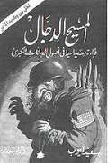
Un journal jordanien, Al-Sabil, écrivait, par exemple, en 1999: « Nous devons apprendre de nos modèles, et entreprendre ce qui est important pour nos voeux d’Arabes. Hitler a atteint ce qu’aucun Arabe n’est parvenu à faire jusqu’à aujourd’hui: il a purifié son pays des Juifs. Considérez Hitler et reprenez ainsi l’espoir d’une Jérusalem libérée. »
Lorsque la police palestinienne salua pour la première fois Arafat dans les zones autonomes, elle lui offrit le tribut du salut Nazi, le bras droit tendu et dressé vers le haut. Enfin, en 1985, Arafat déclara qu’il était honoré de marcher dans les pas du Mufti Husseini, et il ne manque jamais une occasion de célébrer sa mémoire et de revendiquer son lien de parenté avec ce personnage devenu héros national. En 1951, un proche parent du Mufti, nommé Rahman Abdul Rauf el-Qudwa el- Husseini, s’inscrivait à l’Université du Caire. Cet étudiant décida alors de cacher sa véritable identité et s’inscrit sous le nom de "Yasser Arafat."
La collaboration arabo-nazie continua sous deux formes après la guerre. Il y eut, d’une part, survivance de groupes nazis arabes fondés par les nazis ou ex-nazis, comme les ’chemises vertes’, en Égypte. Il y eut, d’autre part, une source d’inspiration directe des mouvements nationalistes arabes sur le modèle nazi.
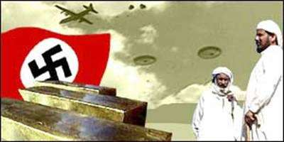
Le parti du "Hisb-el-qaumi-el-suri" (PPS), ou Parti National Socialiste en Syrie, en est un exemple. Son leader, Anton Saada a copié son style sur le Führer de la nation syrienne, et Hitler devint connu dans ce pays sous le nom de "Abu Ali" (En Égypte son nom était "Muhammed Haidar"). La bannière du PPS portait la svastika sur fond noir et blanc. Plus tard, une branche libanaise du PPS, qui recevait encore ses ordres de Damas, fut impliquée dans l’assassinat du président libanais, Pierre Gemayel.
Le parti le plus influent qui s’inspira des nazis fut celui de la «Jeune Égypte», fondé en octobre 1933. Il disposait de troupes de choc, organisait des processions avec des torches, et utilisait des traductions littérales extraites de Mein Kampf, telles que «un peuple, un parti, un leader». Ce parti prônait des actions héritées de l’antisémitisme nazi, dont des appels à boycotter les entreprises ou les commerces juifs et à attaquer physiquement des Juifs.
Après la guerre, un membre de « Jeune Égypte », appelé Gamal Abdul Nasser, fut parmi les officiers qui menèrent la révolution de juillet 1952, en Égypte. Leur première action politique, à l’instar d’Hitler, fut d’interdire tous les autres partis politiques. L’Égypte de Nasser - c’est de notoriété publique - devint un havre de paix pour les ex-nazis, dont le Général SS qui avait été chargé de l’élimination de la communauté juive ukrainienne. Il devint le bras droit de Nasser, et son garde du corps. Alois Brunner, autre ex-nazi connu, trouva refuge à Damas, où il servit de nombreuses années de conseiller en chef de l’état-major syrien. Il vit toujours à Damas.
Il est particulièrement important de rappeler les liens entretenus par les mouvements palestiniens de l’OLP, du FDLP, et du NAYLP avec les mouvements nazis. Ces liens sont d’autant plus importants qu’ils éclairent d’une façon logique les constantes et la continuité entre l’antisémitisme nazi et palestinien: plus de surprise, en effet, au vu des caricatures antisémites et des théories diffusées dans les livres scolaires palestiniens, si l’histoire récente révèle des liens assidus entre mouvements nazi et palestinien.
1. Les origines: une association très officielle
L’OLP est fondée par Yasser Arafat en 1968. Le 23 octobre 1970, le Nazional Zeitung, journal nazi publié à Münich, publie l’annonce suivante:
« On recherche! de courageux camarades prêts à se joindre à nous, un groupe d’amis politiquement engagés, pour un voyage au Moyen-Orient comme correspondants de guerre, pour étudier la GUERRE DE LIBERATION des réfugiés palestiniens, afin de reconquérir leur pays. Si vous avez une expérience des tanks, présentez immédiatement vos candidatures. L’argent n’est pas un obstacle. Seuls comptent l’esprit de camaraderie et le courage personnel. Toute information sur l’Organisation de Libération de la Palestine sera fournie sur demande. »
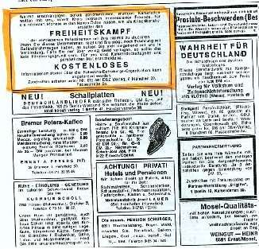
Lorsque George Habash lança son premier commando du FPLP sur Rome, en 1968, il était un fervent marxiste-léniniste, et son engagement politique pourrait paraître opposé à cette alliance visible entre nazis et OLP. Néanmoins, nous le verrons, les liens entre l’OLP et les mouvements d’extrême gauche n’empêchèrent jamais l’existence de liens parallèles de l’OLP avec les mouvements de l’extrême droite européenne. Feltrinelli lui-même (un des leaders de l’extrême gauche révolutionnaire italienne de l’époque) lui avait conseillé d’internationaliser le conflit et de « prendre contact avec d’autres mouvements révolutionnaires ». Habash n’avait pas besoin d’adhérer à toutes les idées de Feltrinelli pour embrasser le point central de cette perspective, ainsi que le révèle l’une de ses déclarations: « Nous pensons que tuer un Juif loin du champ de bataille est plus efficace que de tuer cent Juifs sur le champ de bataille, parce que cela attire plus l’attention. » Les liens historiques entre Palestiniens remontent à l’entente et aux accords ayant existé entre le Mufti de Jérusalem et l’Allemagne nazie. Néanmoins, on aurait pu penser que ces liens circonstanciels auraient changé après la guerre et le procès de Nuremberg, qui avait abouti à un consensus mondial de l’opinion publique contre le nazisme. En 1970, cependant, l’OLP est un mouvement nouveau-né, prêt à toute alliance susceptible de lui procurer un soutien militaire et financier, et ce mouvement s’allie avec l’internationale extrême droite sans se soucier du fait que les nazis rejetaient autant les Arabes que les Juifs.
(1) L’organisation de l’internationale fascisante
L’internationale de l’extrême droite néo-nazie opérait à partir de Paris, sous le nom d’"Ordre Nouveau européen". Ce groupe était composé d’anciens nazis et de sympathisants plus récents du nazisme, de fascistes, d’anciens vichyssois convaincus, de franquistes, et de partisans de Salazar au Portugal, d’anciens fascistes de Mussolini, et de la junte militaire de la ‘Grèce des colonels’. L’internationale rouge et l’internationale dite « noire », d’extrême droite, opéraient parfois même ensemble, partageant des buts communs de démantèlement des démocraties. C’est ainsi que le prince italien fasciste, Valerio Borghese, eut des rencontres répétées avec le militant communiste Feltrinelli, en Suisse, en 1971. Le tableau se complique encore si l’on prend en compte les rapports très récents de juges italiens concernant les résultats des enquêtes faites sur les mouvements terroristes ayant opéré dans l’Italie des années 70. En effet, leurs rapports ont mis en évidence le noyautage systématique de tous ces mouvements par des agents provocateurs de la CIA, dont le but évident a consisté à déstabiliser la démocratie italienne dans l’espoir que l’Italie demande aide et support aux Etats- Unis, ce qui fut presque obtenu à la fin des années 70, lorsque l’Italie parvint à se redresser in extremis de sa situation de crise intérieure. En conséquence, il est clair que les USA, par le biais de la CIA, étaient parfaitement au courant des liens existant entre l’internationale néo-nazie et les Palestiniens.
(2) L’aide néo-nazie et l’OLP
Le premier sommet de l’internationale néo-nazie eut lieu le 2 avril 1969, à Barcelone. Ce "congrès" très particulier bénéficia de toutes les bénédictions du Général Franco. Deux représentants du Fatah, branche armée de l’OLP de Yasser Arafat, étaient présents. Quelques mois plus tard, le FPLP de Habash rejoignait l’OLP et le Fatah. Nul doute que le soutien obtenu à Barcelone avait convaincu Habash des chances de Yasser Arafat et avait ainsi contribué à ce rapprochement. Lors du congrès de Barcelone, les délégués du Fatah traitèrent des levées de fonds, des besoins d’organisation de trafic d’armes, et du besoin en instructeurs militaires qu’ils trouvèrent, tout naturellement parmi les anciens officiers nazis. Un recrutement de la jeunesse aryenne fut même mis en place pour soutenir les forces du Fatah, ainsi que l’établissement d’un réseau d’éléments prêts à collaborer à des actions terroristes en Europe. Les premiers slogans de propagande furent mis au point, tels que: "Vive les glorieux combattants palestiniens s’opposant à l’impérialisme sioniste!", et les ’classiques antisémites’, comme le faux fameux des "Protocoles des Sages de Sion", circulèrent, ainsi qu’un nouveau livre sur Israël, portant le titre: "L’ennemi de l’Homme".
Après la conférence de Barcelone, plusieurs instructeurs militaires nazis partirent immédiatement pour le Moyen-Orient afin de former les Palestiniens, dont Erich Altern, alias "Ali Bella", ancien dirigeant régional des Affaires Juives de la Gestapo pour la région de la Galicie.
Le 28 mars 1970, un autre sommet de l’Internationale néo-nazie se tint à Paris, où un ancien officier SS Belge mit son parti "totalement et inconditionnellement au service de la résistance palestinienne". Cet ex-officier SS était Jean Robert Debbaudt.
Le 16 septembre 1972, dix jours à peine après le massacre des athlètes israéliens à Munich, se tint un autre sommet néo-nazi en faveur des Palestiniens, dans cette même ville. La police allemande n’était apparemment pas au courant de la tenue de cette manifestation, qui était pourtant le plus grand rassemblement nazi depuis la guerre. Des délégués fascistes italiens étaient aussi présents. Ils furent interviewés à leur retour à Rome par Sandra Bonsanti. Six cents délégués nazis applaudirent les délégués palestiniens pour leur "exploit". Ils distribuèrent aussi des livrets relatant comme une oeuvre glorieuse l’assassinat de Robert Kennedy par un Palestinien, Sirhan B. Sirhan, dont la photo portait comme sous-titre "Je l’ai fait pour mon pays". Un second sous-titre portait la mention: "Le véritable coupable, le sionisme, court toujours."
Une autre conférence eut lieu, le 4 mars 1974, à l’hôtel Hilton de Rome. Le Colonel Kadafi envoya son premier ministre, Ahmed Jalloud, chargé de verser sa contribution aux groupes néo-nazis. Simultanément, Kadafi finançait déjà le groupe pro- palestinien de Carlos, à Paris. Le groupe de Carlos recevait des armes fournies clandestinement par Petra Krause, une anarchiste suisse dont les parents étaient morts dans les chambres à gaz d’Auschwitz, et qui devait ignorer toutes les ramifications de ce mouvement.
Des camps d’entraînement des Palestiniens furent organisés par cette Internationale néo-nazie, dans les Pyrénées espagnoles, et dans le Haut-Adige italien (à Malta Croun). Le camp de Malta Croun, en particulier, était dirigé par le groupe fasciste Avanguardia Nazionale, et visait à "forger la jeunesse palestinienne". À partir de la fin des années 70, on perd la trace des liens néo-nazis/OLP, au profit des liens entre l’extrême gauche, Cuba, et l’OLP. Rien, cependant, à ce point de notre enquête, ne permet de dire que ces liens, qui n’avaient pas été conçus comme contradictoires avec les liens entretenus avec l’extrême gauche, aient été effectivement rompus. Nous verrons que les récentes attaques terroristes internationales de ces dernières années suggèrent au contraire une continuité de cette collaboration.
(3) Thématique du Nationalzeitung et propagande palestinienne
La suite de notre enquête nous a permis d’affiner notre perception du Nationalzeitung, journal nazi fondé en 1932 et continuant sa diffusion jusqu’à aujourd’hui. Ainsi que décrit précédemment, ce journal publiait, deux fois par mois, des annonces enjoignant aux officiers et militaires nazis de rejoindre les camps de formation des combattants de l’OLP en Palestine dans les années Soixante-dix. Le contexte dans lequel ces annonces paraissaient est important, et il faut resituer l’évolution de la communication de ce journal pour comprendre l’évolution des annonces de l’OLP en son sein. Le ton et la forme vont, en effet, évoluer, jusqu’à devenir l’actuelle propagande pro-palestinienne, qu’elle soit issue de ce journal, ou rediffusée, à présent, partout.
(4) Les thèmes favoris du Nationalzeitung de 1970 à 1990
Le Nationalzeitung est un journal ouvertement pro-hitlérien, quelle que soit la période considérée, mais ses techniques de communication ont évolué, devenant de plus en plus subtiles et pernicieuses. Ainsi, dans les années 60-70, ce journal commença par nier systématiquement la Shoah. Chaque édition du journal, (deux fois par mois, à l’époque, sans doute par manque de fonds, hebdomadaire actuellement), ne manque pas de consacrer un minimum de deux pages entières à cette entreprise révisionniste. Non, les Juifs ne sont pas morts selon un plan de destruction de masse. Ils étaient bien nourris. Des photos truquées, en noir et blanc, mettent en scène des hommes, torse nu, la panse dodue, en train de creuser de petits canaux, et semblant ne pas trop se tuer à l’ouvrage. Titre: « Voilà ce qu’il se passait réellement à Auschwitz! » Le numéro suivant parle de la catastrophe du typhus, qui a décimé les prisonniers de ces camps juste avant l’arrivée des Américains. Le numéro suivant parle de « la vérité sur les morts surnuméraires des camps de concentration: ce sont les forces alliées qui ont tué les Juifs en prenant les camps. La preuve: les camps ont souvent été incendiés à l’arrivée des Alliés, et parmi les cadavres, nul doute que l’on pourrait trouver de braves soldats allemands, qui se sont acharnés à défendre les prisonniers de la barbarie… » Mieux encore, le Nationalzeitung propose une nouvelle version de l’histoire, en se fondant sur la reproduction d’une première page d’un journal anglais qui avait publié, juste avant la guerre, un article titrant: « les Juifs ont déclaré la guerre à l’Allemagne », et évoquant, par cette métaphore, la tentative juive de boycott de l’Allemagne.
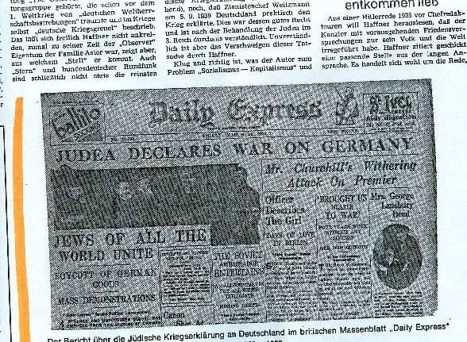
La technique de communication de ce journal passe par deux principes: les formules- choc, et les répétitions. Un même article peut être repris cinq fois en un an, une même photo, dix fois. Ces répétitions finissent par créer une mémoire inconsciente, car la même photo, utilisée parfois dans un autre contexte, se révèle familière, puis connue, puis considérée comme vraie puisque admise par la mémoire comme connue. Et ce qui, dans un journal ‘normal’, nous paraîtrait invraisemblable, voire proche de l’escroquerie du lecteur, ne choque apparemment personne dans le public nazi: il est bon de répéter les contrevérités, et de les faire ainsi admettre par tous comme étant vraies… Vers le milieu des années soixante-dix, un nouveau thème apparaît, significatif à la fois quant au fond et à la forme. « Ce ne sont pas les Allemands qui ont commis un holocauste, mais les alliés qui sont coupables d’un holocauste des Allemands. Six millions d’Allemands sont morts dans cet holocauste! »
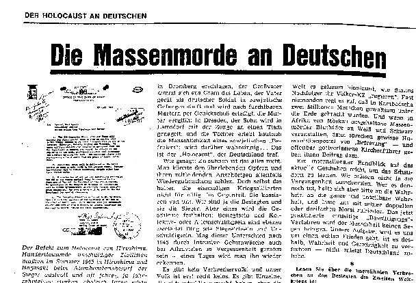
Le massacre de Katyn (soldats allemands tués gratuitement par les Russes) remplit régulièrement les colonnes du Deutsche Zeitung. Le processus d’inversion du bourreau en victime est si grotesque que la première lecture d’une page de photo- montage de l’holocauste allemand prête à sourire, mais d’un sourire amer. La répétition de cette contre-vérité démontre qu’une «vérité journalistique» peut naître de la répétition et du ton assuré qu’adoptent ses auteurs... Parallèlement, le Nationalzeitung reprend une technique familière à Hitler, dans ses discours, consistant à associer et confondre deux groupes humains en un seul groupe d’intérêts, le processus étant encore facilité par le fonctionnement de la langue allemande qui permet un ajout de particules au même mot de façon infinie. « Les Judéo-Américains (traduisez en fait « Juifs-Américains », en un seul mot,) sont en train de faire un holocauste au Vietnam, et le monde entier se tait… Les Juifs- Américains ont perpétré l’holocauste des Indiens, et le monde ne les a pas condamnés…
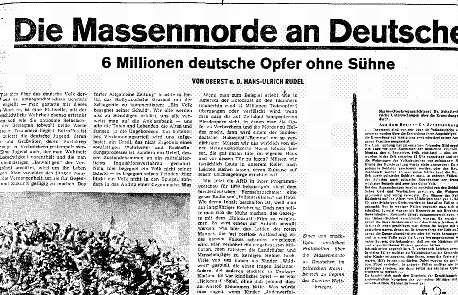
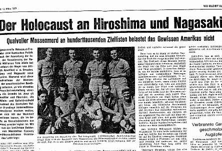
A la fin des années soixante-dix, et jusque dans les années quatre-vingts s’ajoute à ce thème celui d’Israël préparant la destruction de masse d’un peuple - les Palestiniens... Le sionisme est racisme.
Et c’est dans ce contexte que sont publiés, une à deux fois par mois, les annonces invitant les "Allemands patriotes" (traduisez: nazis) à aider les victimes du prétendu holocauste perpétré par les Juifs à l’égard des Palestiniens. Le personnage de Begin va offrir un argument de choix aux Nazis: l’ancien terroriste a du sang sur les mains, et s’apprête à organiser l’anéantissement des Palestiniens...
Dans les années quatre-vingts, mais surtout post quatre-vingt-dix, l’Allemagne a commencé à réagir à la montée nazie. Une lettre de la communauté de Münich, qui réagit contre le journal est même publiée par celui-ci et présentée comme émanant de l’ennemi éternel. Ce courrier condamne la propagande pro-palestinienne. Cette lettre, datant du milieu des années 1980, marque un tournant dans la propagande palestinienne, qui va tout d’abord se montrer plus discrète. Le nombre de procès dont se vante le journal qui demande régulièrement des soutiens financiers à ses membres pour les frais de justice laisse penser que cette pression supplémentaire l’engage à plus de retenue. Enfin, pour le cas précis de la cause palestinienne, il est clair que, plus ces idées pénétraient la société, plus le journal pouvait baisser le ton, et prétendre même être « politiquement correct ».
(5) L’évolution des annonces pro-palestiniennes
Les annonces pro-OLP changent progressivement d’apparence. On ne demande plus ouvertement un soutien militaire pour l’OLP, mais une « aide militaire » pour les peuples du Moyen-Orient et du Tiers Monde devant se battre contre l’influence bolchevique. Le temps de la guerre froide est peut-être officiellement terminé, mais l’Union Soviétique a effectivement aidé Israël, et l’ennemi est ainsi bien marqué. De plus, l’annonce est assez ambiguë pour suggérer, dans sa forme, que le péril rouge vient de l’aide de l’Union Soviétique aux pays du Tiers Monde; or, dans les années soixante-dix, l’URSS avait effectivement énormément investi pour l’éducation de jeunes Palestiniens en Russie. Ces liens perdureront jusqu’à la fin des années quatre- vingts, permettant au géant soviétique de jouer la carte de la déstabilisation dans la région, avant de s’effondrer avec les débuts de la Perestroïka.
a) L’aide humanitaire
Le journal s’affiche comme un soutien des pauvres en publiant gratuitement les annonces de demandes d’emploi des Allemands patriotes au chômage, ou les offres d’emploi pour patriotes. Les annonces se diversifient, et on peut même trouver des annonces d’étrangers arrivant en Allemagne et cherchant un logement, etc. Le journal se veut de plus en plus politiquement correct, puisqu’il accorde ainsi symboliquement une place aux étrangers…
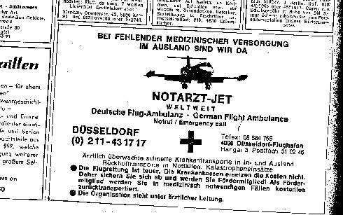
Le journal National Zeitung publie alors les annonces de soutien aux "peuples du Moyen-Orient menacés par le géant rouge" à côté d’annonces pour l’équivalent allemand de Médecins Sans Frontières.
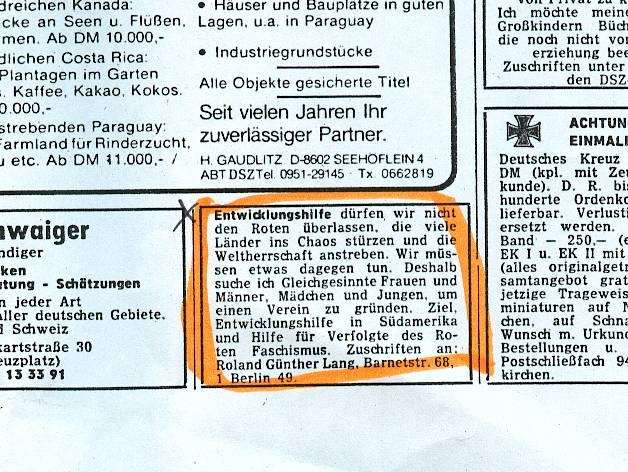
Les annonces privées se multiplient, et la définition des valeurs du patriote d’après le DVU (parti nazi) fait se côtoyer la culture physique et la fierté allemande ainsi que la solidarité avec les souffrances des peuples opprimés et des petits. Le DVU, comme le National Zeitung, ressort de son jeu le soutien de la petite bourgeoisie populaire, et ces thèmes permettent bientôt de demander, de façon de plus en plus anonyme, des aides financières « pour les peuples opprimés du Monde entier, de l’Afrique, du Moyen Orient, etc. ».
L’aide financière nazie aux Palestiniens se fait de plus en plus discrète dans les années 80. Les annonces du journal National Zeitung se présentent comme des demandes d’aide humanitaire pour les « victimes des attaques israéliennes », puis parlent d’aide humanitaire, sans préciser le destinataire de cette aide.
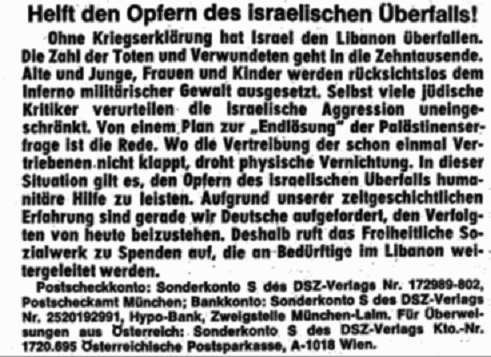
Progressivement l’aide militaire et financière se fait donc plus discrète, plus politiquement correcte, alors que le discours néo-nazi reprend des thématiques adoptées par son public pour les associer au conflit israélo-palestinien. Cette stratégie d’écriture va s’avérer si efficace que l’on retrouve dans la presse non nazie, dès le milieu des années 80, tous les thèmes néo-nazis pro-palestiniens adoptés sans vergogne ni méfiance.
b) La négation de l’holocauste
La thématique nazie de l’après-guerre est composée d’un nombre restreint d’arguments, que le lecteur du Nationalzeitung voit répétés très régulièrement. Les photos utilisées sont souvent les mêmes, associées à différents articles qui sont eux- mêmes réédités régulièrement. Cette technique de répétitions associant, en les diversifiant, textes et images, vise à constituer une forme de sentiment de déjà-vu, qui se mue progressivement en une conviction du lecteur qu’il "connaît" cette partie de l’histoire à laquelle il est fait allusion. Progressivement, ces souvenirs artificiels constituent, de fait, une mémoire de référence pour l’individu endoctriné, qui confondra la dimension familière et répétitive de ces récits avec le sentiment d’authenticité et d’historicité de l’événement. La propagande "néo-nazie" répète ainsi, à intervalles réguliers, le mythe des "six millions d’Allemands" tués en holocauste pendant la Seconde Guerre mondiale. On trouve ainsi des montages photographiques utilisant des images de monceaux de cadavres, présentées comme des photographies de l’holocauste des Allemands, qui aurait été maquillé en holocauste du peuple juif (voir, plus haut, la reproduction de la photographie). Il est essentiel de comprendre que cette stratégie de communication n’est pas le résultat du hasard mais correspond à une technique élaborée par les nazis. Le principe de renversement de l’accusation constitue l’une des techniques fameuses de la rhétorique nazie, dite du "turnspeech" [inversion du discours]. Le but des glissements successifs du thème de l’holocauste vise, en définitive, à renvoyer la culpabilité de l’holocauste sur la victime, c’est-à-dire sur le peuple juif. Ainsi, progressivement, le thème de l’holocauste du peuple allemand se voit repris par des variations telles que "l’holocauste du peuple allemand hongrois", ou l’holocauste du peuple vietnamien", les bourreaux étant soit les Juifs, soit la juiverie mondiale, soit les Américains: aux yeux des nazis, ceux-ci n’étaient qu’un peuple dégénéré issu de l’immigration juive d’Europe de l’Est.
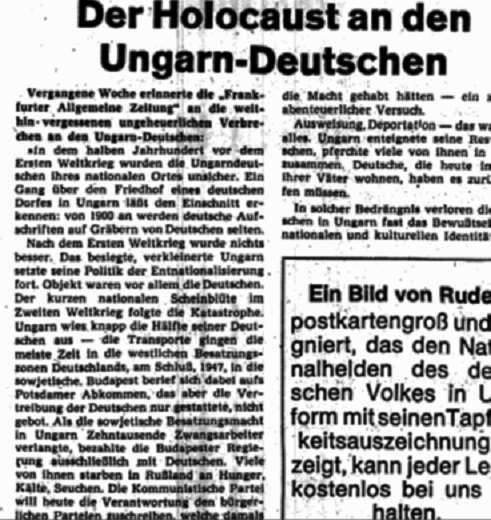
Ce premier thème de l’holocauste allemand perpétré par les Juifs et les Américains, est repris, avec des variantes, en présentant des camps de concentration d’Allemands en Pologne, en parlant de "la vérité historique des six millions [d’Allemands] tués", etc. Le glissement final aboutit inexorablement au turnspeech, consistant à accuser Israël de perpétrer un holocauste.
c) Les réparations « excessives » demandées au peuple allemand et leur « détournement »
Ce premier thème négationniste essentiel va entrer en congruence avec le thème des « réparations allemandes », très populaire en Allemagne après la guerre. Il faut d’abord commenter un instant le terme de « Wiedergutmachung », qui suggère, en allemand, à la fois le fait de revenir en arrière, et le fait de refaire du bien. Ce terme pourrait être traduit littéralement comme « remettre en bon état ». C’est donc un terme accusateur, qui explicite la condamnation de l’Allemagne et sa culpabilité dans le conflit de la seconde guerre mondiale, ce qui n’était pas le cas du terme employé pour les réparations de guerre à la fin de la Seconde Guerre mondiale. Ce terme est donc refusé par tous les Allemands qui refusent d’endosser individuellement la culpabilité des actes des nazis, et qui considèrent que leur mobilisation dans la Wehrmacht n’était pas le fait d’un choix libre. Cette tranche de la population allemande est sensible à la propagande du Nationalzeitung, qui parle de façon goguenarde de ces programmes de réparation "de remise en bon état" comme d’une hypocrisie internationale. Le Nationalzeitung va donc lancer une campagne contre ces réparations versées aux Juifs, en montrant tout d’abord que ces sommes versées sont très importantes, voire, selon ce journal, excessives, avant d’associer ces versements au conflit israélo- palestinien.
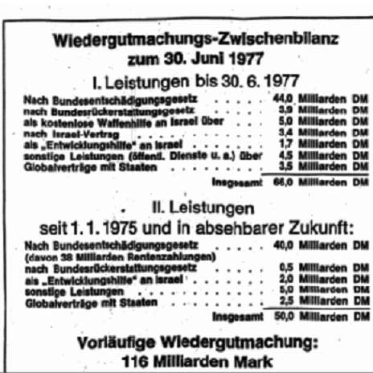
Cette première thématique pro-nazie et pro-germanique, va être aménagée pour s’adapter à la campagne de presse pro-palestinienne que le journal nazi entreprend dès 1975, et qu’il poursuit encore aujourd’hui. Le thème des réparations excessives est combiné avec celui de l’État hébreu agresseur du peuple palestinien, pour montrer que ce sont les sommes payées par les Allemands qui permettent en définitive le "génocide" palestinien:
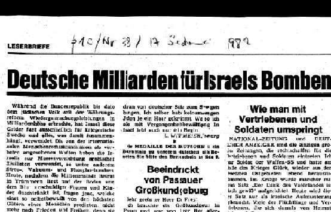
Dans les années quatre-vingt-dix, le soutien nazi aux Palestiniens ne passe plus que par des annonces indirectes et par la propagande effective menée en faveur des Palestiniens, et ce jusqu’à aujourd’hui. Des annonces sibyllines demandent une aide financière pour les peuples opprimés. Un numéro de compte en banque est la seule identité révélée par l’annonce. Les annonces de vente d’armes côtoient des annonces de "formation militaire à l’étranger", mais on ne situe plus le lieu de la formation, il faut écrire au journal... Parallèlement, le National Zeitung a entretenu la haine du communisme, grâce à l’opposition aux actions de l’extrême gauche révolutionnaire en Allemagne, de 1975 à 85. Le terrorisme est devenu, dans son vocabulaire, le synonyme du bolchevisme. Il lui est désormais impossible d’évoquer ouvertement le terrorisme de l’OLP sans paraître se contredire. On parle donc d’aide humanitaire, même si cette aide prend, en définitive, la forme d’une aide militaire... Quant à la thématique de l’holocauste du peuple allemand perpétré par les Juifs, elle est transformée pour devenir l’holocauste du peuple palestinien par les Israéliens.
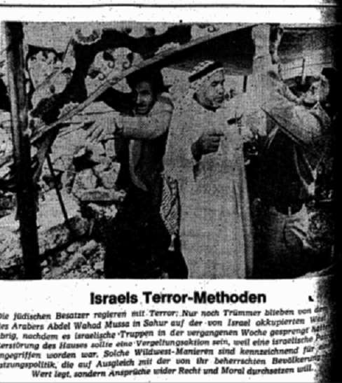
Très rapidement, les termes de « terreur israélienne » (qui inversent ainsi les actes terroristes palestiniens pour en accuser Israël), sont remplacés par les termes d’holocauste, et Moshé Dayan lui-même est paradoxalement présenté comme un successeur d’Hitler. Le journal Nazional Zeitung ne s’embarrasse pas des contradictions, et accuse Dayan, sans se rendre compte qu’en utilisant cette comparaison, il reconnaît implicitement que l’holocauste des Juifs a effectivement été organisé par Hitler.
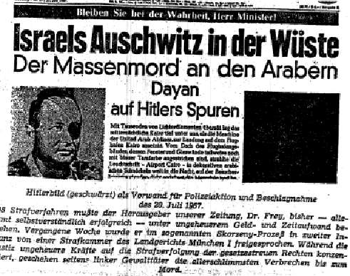
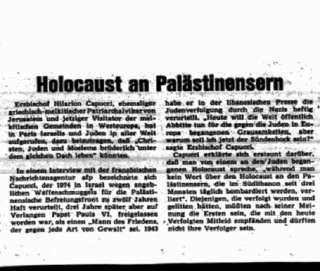
L’ « Auschwitz israélien » dans le désert
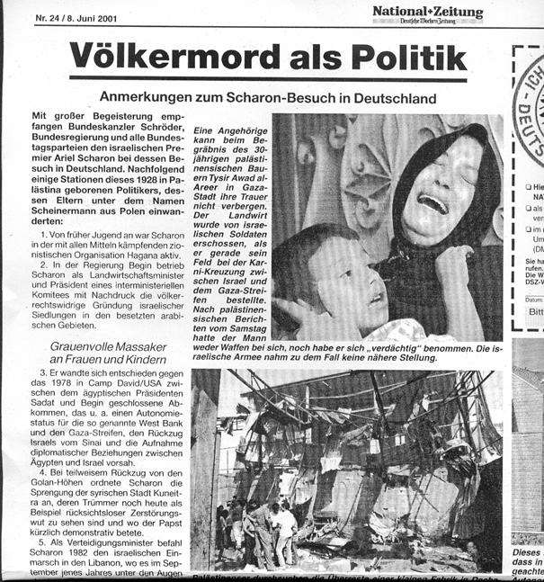
"Völkermord als Politik" titrait le Nationalzeitung en 2001, "le génocide en guise de politique". A cette date, malheureusement, la thématique nazie pro-palestinienne est devenue un tel lieu commun, que le titre rageur semble éculé.
Le langage révisionniste récupéré par les Palestiniens, le "turnspeech" utilisé comme rhétorique sont devenus monnaie courante.
Quant à la propagande pro-palestinienne, elle reprend les thèmes nazis utilisés depuis le départ: Les Juifs, qui sont la cause de l’holocauste des Allemands, puis des Vietnamiens, de la bombe atomique sur le Japon, s’acharnent actuellement contre les Palestiniens. « Le sionisme est du racisme », pouvait-on lire, dès 1975, dans ce journal. Ce thème est à présent répété en choeur par les Palestiniens, alors que le thème de l’holocauste palestinien, si souvent répété par ceux-ci, est en train d’envahir la presse européenne: les techniques nazies d’inversion, de répétition, de lavage de cerveau ont réussi. Ces thèmes nazis ont mis vingt ans à prendre racine, mais ils ont actuellement gagné la presse entière, qui les propage à son tour, et en a fait des thèmes politiquement corrects. La propagande palestinienne actuelle est une traduction littérale de la propagande anti-juive du Nazional Zeitung depuis les années 1970-80. Quant à la coopération militaire, François Genoud (le Testament d’Hitler) se vantait, dans une interview accordée il y a quelques années, des liens de coopération existant entre nazis d’aujourd’hui et Palestiniens, et rien ne nous permet de remettre en question son témoignage actuellement. La forme de cette collaboration est seulement devenue plus discrète. Elle ne s’affiche plus. Mais pourquoi cesserait-elle, alors que les Nazis espèrent toujours combattre les Juifs et les anéantir, ne fut-ce que par l’intermédiaire palestinien? On remarque souvent cet étrange renversement identitaire qui pousse les Palestiniens, voire les autres peuples arabes à comparer Israël au régime nazi, tout en niant, par ailleurs, l’importance de l’holocauste. La reprise de cette thématique nazie du dénigrement a des sources très précises dans le Deutsche Nazional Zeitung, comme nous allons le voir, mais il est aussi essentiel de réaliser que la technique d’inversion et de contre-attaque par l’accusation de l’autre pour ses propres fautes est aussi une technique de rhétorique mise au point par les Nazis, et donc transmise par eux aux Palestiniens. Les historiens nomment cette technique le « turn speech », pour désigner précisément la stratégie rhétorique, devenue progressivement systématique chez les Nazis, qui consistait, comme lors de l’attaque de la Tchéchoslovaquie, à prétendre que les Tchéchoslovaques avaient attaqué l’Allemagne, avant même que ceux-ci aient pu avoir le temps matériel de diffuser un message concernant l’attaque de leur pays par l’Allemagne. En accusant Israël de nazisme, les Palestiniens usurpent, d’une part, l’identité de leur adversaire, mais couvrent, de plus, les rapports historiques permanents qu’ils ont entretenus et continuent d’entretenir avec les groupes nazis, jusqu’à aujourd’hui. De plus, les dirigeants palestiniens parviennent ainsi à se soustraire à tout repérage du modèle idéologique qui est le leur, et échappent à une analyse politique rigoureuse qui distinguerait entre « palestinisme » et Palestiniens, comme la distinction a pu se faire entre nazisme et Allemands. Il faut comprendre que la négation de la Shoah a aussi pour but de dénier toute légitimité à l’existence de l’État d’Israël. Combinant négationnisme et turn speech, et dans la droite ligne du grand Mufti, le Grand Mufti actuel de Jérusalem, Sheikh Ekrima Sabri, quelques heures avant d’accueillir le Pape, donna une série d’interviews, en déclarant tout d’abord que « le chiffre de 6 millions de Juifs tués pendant l’holocauste est exagéré et est utilisé par les Israéliens pour obtenir un soutien international. Ce n’est pas mon problème. Les musulmans n’ont rien fait dans toute cette histoire. C’est le fait d’Hitler, qui détestait les Juifs ». Ces déclarations du Mufti furent ensuite reprises par Arafat, qui renchérit: « Six millions? bien moins! » Sabri, interviewé par un journal italien, déclara encore: « Ce n’est pas ma faute si Hitler détestait les Juifs. De toute façon on les déteste partout. » Le clou des interviews fut donné le même jour par le Mufti à l’agence Reuter: « Nous dénonçons tous les massacres, mais je ne vois pas pourquoi un massacre en particulier deviendrait une sorte de chantage et assurerait un gain politique. » La technique du "turnspeech" est aujourd’hui systématiquement utilisée par les nazis comme par les Palestiniens, retournant l’histoire juive contre les Israéliens eux- mêmes, comme dans cette caricature illustrant le conflit israélo-palestinien par le combat de David contre Goliath. Qui se rappellera alors que Goliath était un Philistin, ancêtre [prétendu] des Palestiniens, en regardant cette caricature où il représente le géant Israël, dont la force militaire disproportionnée écrase le pauvre David palestinien?
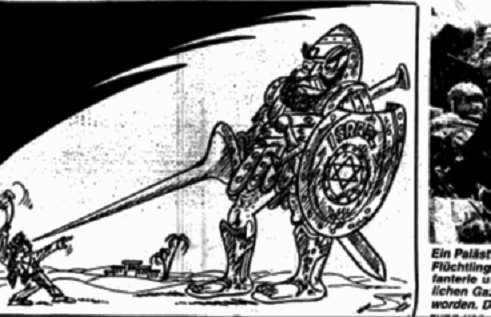
Les fréquentes annonces de camps de vacances au Paraguay ne sont sans doute pas un hasard, puisque le Paraguay était devenu, après la guerre, le havre des anciens nazis. Nul doute non plus que le "triangle du terrorisme", situé entre le Paraguay, l’Argentine et l’Uruguay, profite du tourisme nazi, et que ces fonds, dont on a pu montrer récemment, dans un rapport du State Department américain, qu’ils soutenaient le Hezbollah et le Hamas, constituent une filière supplémentaire de cette association. Néanmoins, il restera toujours impossible de prouver que les croisières nazies au Paraguay ont ce but avéré. Il reste que la traçabilité de la propagande anti-juive dans ses sources nazies ne se résume pas à un seul journal. Le cas le plus important de collaboration entre les néo-nazis et les Palestiniens est actuellement encore l’objet d’une enquête: il s’agit de l’attentat de Oklahoma city, dont le coupable numéro un, Timothy Mc Veigh, a accompli son acte grâce à un certain Strassmeir, néo-nazi de nationalité allemande. Selon les avocats de la défense, Jonathan Sams et Stephen Jones, la connexion néo-nazie était doublée d’une connexion terroriste « du Moyen Orient », voire palestinienne. Cet argument, abandonné comme étant invraisemblable à l’époque, se voit aujourd’hui confirmé par les liens ouverts entre Islamistes et Nazis.
« Il y a un sentiment général de sympathie, un sens de combat commun» déclara Horst Mahler, un membre du parti nazi allemand, le 30 avril 2002 à l’International Herald Tribune. « Il y a des contacts avec des groupes politiques, en particulier dans le monde arabe, et avec les Palestiniens. C’est un fait que l’on ne cache pas ».
Combien, parmi les 58.000 néo-nazis allemands, se joignent à cette alliance? S’il est difficile de donner des chiffres, Alfred Shobert, un chercheur de Duisburg, en Allemagne, membre du service d’Information contre l’extrémisme d’extrême droite, décrit des scissions internes au mouvement néo-nazi sur cette question: «Certains membres de base sont des racistes traditionnels, et ne veulent rien avoir à faire avec les Musulmans», mais, ajoute-t-il, «certains leaders voient dans l’alliance un potentiel...» Ainsi, lors des manifestations ayant eu lieu en Allemagne après le 11 septembre [2001], il n’était pas rare de voir certains porter le keffieh palestinien... Et quant au roman qui a inspiré Timothy Mc Veigh pour son attentat, «The Turner Diaries», il est à présent consultable sur le site du Hezbollah...
Un journal allemand titrait il y a quelques semaines « Nazis et Islamistes: de Nouvelles Alliances? »
Nazis und Islamisten: Neue Allianzen? Seit dem 11. September findet ein zunehmender Schulterschluss von fundamentalistischen Islamisten und deutschen Nazis statt. Gemeinsam bejubeln Rechtsextreme und Islamisten die Anschläge gegen die USA. Dabei sind Antisemitismus und Antiamerikanismus die stärksten Bindeglieder. « Depuis le 11 septembre [2001], on constate un épaulement mutuel des Islamistes fondamentaux et des Nazis allemands. L’extrême droite et les Islamistes se réjouissent de concert de l’attaque contre les USA. Dans cette alliance, l’antisémitisme et l’anti-américanisme sont les plus forts alliés. »
En Europe, comme dans le monde arabe, les déclarations nazies et islamistes dévoilent de plus en plus les buts et les ennemis communs de ces deux groupes, affichant parfois même leur alliance.
Il faut ici citer le discours du vendredi 13 octobre 2000, à la mosquée du Sultan Al Nahayan, à Gaza. Le prédicateur, Dr Ahmet Abu Halabiya, membre de l’Autonomie Palestinienne de Yasser Arafat, appela à l’assassinat des Juifs en disant:
« N’ayez aucune pitié des Juifs, quels qu’ils soient, et plus encore, dans quelque pays qu’ils soient. Combattez-les, où qu’ils soient. Où que vous les rencontriez, tuez-les. Où qu’ils se trouvent, tuez les Juifs et les Américains, qui sont comme eux, et tuez tous ceux qui les soutiennent… »
Les manifestations néo-nazies du 3 octobre en Allemagne associaient ouvertement la haine du Juif à la haine de l’Amérique et appelaient à attaquer les Juifs et les Américains « Avec Odin et Allah » (« Mit Odin und Allah »), prenant ouvertement fait et cause pour les Islamistes.
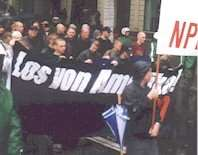
Les Etats-Unis ont commencé la lutte contre le terrorisme islamique. Mais pourront- ils éradiquer les fondements de l’association des nazis et des terroristes islamistes?
Dossier réalisé par D. I. pour l’UPJF
Mis en ligne le 20 mai 2003 sur le site http://www.upjf.org
Version mise à jour postée sur le site Academia.edu, le 23 octobre 2016, par Menahem R. Macina
1 Je remets en course ce texte mis en ligne sur mon site Debriefing.org,il y a quelques années. Il est le fruit d’une compilation financée par l’Upjf. Les droits de reproduction lui appartiennent donc en propre. Toutefois, l’étude peut être reproduite par les sites et les blogues, sous réserve de la mention suivante et du lien à la page où elle figure sur notre site, qui sont obligatoires: Copyright UPJF- 1999-2009. Voir aussi, en anglais, entre autres, sur le site Eretz Yisroel.org: « Muftism and Nazism: World War II Collaboration Documents ». ↩
2 David Yisraeli, Germany and Zionism, Germany and the Middle East, 1835-1939. ↩
3 Voir George Lepre, Himmler’s Bosnian Division. The Waffen-SSHandschar Division 1943-1945, Schiffer Military History, Atglen, PA, 1997. ↩
4. La situation actuelle des soutiens nazis aux Palestiniens ↩